(25) Dataloder – & Dataset¶
Motivation: Create dataloaders, next I will be ready to fit.
# HIDE CODE
import os, sys
from copy import deepcopy as dc
from os.path import join as pjoin
from IPython.display import display, IFrame, HTML
# tmp & extras dir
git_dir = pjoin(os.environ['HOME'], 'Dropbox/git')
extras_dir = pjoin(git_dir, 'jb-MTMST/_extras')
fig_base_dir = pjoin(git_dir, 'jb-MTMST/figs')
tmp_dir = pjoin(git_dir, 'jb-MTMST/tmp')
# GitHub
sys.path.insert(0, pjoin(git_dir, '_MTMST'))
from figures.fighelper import *
from model.opticflow import *
# warnings, tqdm, & style
warnings.filterwarnings('ignore', category=DeprecationWarning)
from tqdm.notebook import tqdm
from rich.jupyter import print
%matplotlib inline
set_style()
Trainer¶
from model.vae2d import VAE
from model.train import TrainerVAE
from torch import _dynamo
_dynamo.config.cache_size_limit = 1024
vae = VAE(ConfigVAE(
n_kers=4,
n_latent_scales=3, n_groups_per_scale=20, n_latent_per_group=3,
n_pre_blocks=0, n_post_cells=3, n_cells_per_cond=2,
ada_groups=True, spectral_norm=0,
))
tr = TrainerVAE(
model=torch.compile(vae),
# model=vae,
cfg=ConfigTrain(
lr=0.001, batch_size=512, epochs=1000, grad_clip=1000, warmup_portion=0.1,
lambda_anneal=True, lambda_norm=1e-5, optimizer_kws={'eps': 1e-8},
kl_beta=0.25, kl_anneal_cycles=1),
device='cuda:2',
)
vae.cfg.total_latents()
105
vae.print()
vae.scales
+-------------+------------+ | Module Name | Num Params | +-------------+------------+ | VAE | 10.9 Mil | | --- | --- | | stem | 1.1 K | | pre | 0 | | enc_tower | 5.6 Mil | | enc_sampler | 1.3 Mil | | dec_sampler | 1.3 Mil | | expand | 52.7 K | | dec_tower | 2.6 Mil | | post | 10.3 K | | out | 290 | | cos_recon | 0 | | l2_recon | 0 | | l1_recon | 0 | | l1_weight | 0 | +-------------+------------+
[16, 8, 4]
vae.latent_scales()[1]
{'idx-0_scale-4_group-0': range(0, 3),
'idx-1_scale-4_group-1': range(3, 6),
'idx-2_scale-4_group-2': range(6, 9),
'idx-3_scale-4_group-3': range(9, 12),
'idx-4_scale-4_group-4': range(12, 15),
'idx-5_scale-8_group-0': range(15, 18),
'idx-6_scale-8_group-1': range(18, 21),
'idx-7_scale-8_group-2': range(21, 24),
'idx-8_scale-8_group-3': range(24, 27),
'idx-9_scale-8_group-4': range(27, 30),
'idx-10_scale-8_group-5': range(30, 33),
'idx-11_scale-8_group-6': range(33, 36),
'idx-12_scale-8_group-7': range(36, 39),
'idx-13_scale-8_group-8': range(39, 42),
'idx-14_scale-8_group-9': range(42, 45),
'idx-15_scale-16_group-0': range(45, 48),
'idx-16_scale-16_group-1': range(48, 51),
'idx-17_scale-16_group-2': range(51, 54),
'idx-18_scale-16_group-3': range(54, 57),
'idx-19_scale-16_group-4': range(57, 60),
'idx-20_scale-16_group-5': range(60, 63),
'idx-21_scale-16_group-6': range(63, 66),
'idx-22_scale-16_group-7': range(66, 69),
'idx-23_scale-16_group-8': range(69, 72),
'idx-24_scale-16_group-9': range(72, 75),
'idx-25_scale-16_group-10': range(75, 78),
'idx-26_scale-16_group-11': range(78, 81),
'idx-27_scale-16_group-12': range(81, 84),
'idx-28_scale-16_group-13': range(84, 87),
'idx-29_scale-16_group-14': range(87, 90),
'idx-30_scale-16_group-15': range(90, 93),
'idx-31_scale-16_group-16': range(93, 96),
'idx-32_scale-16_group-17': range(96, 99),
'idx-33_scale-16_group-18': range(99, 102),
'idx-34_scale-16_group-19': range(102, 105)}
len(vae.all_conv_layers), len(vae.all_log_norm)
(229, 225)
all_norm = torch.cat(vae.all_log_norm)
all_norm = torch.exp(all_norm)
sns.histplot(to_np(all_norm), bins=200);
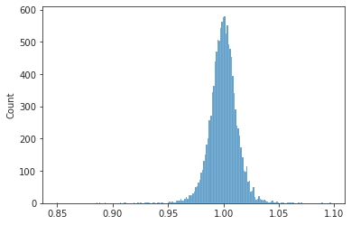
tr.alphas = None
Review train options¶
print(f"VAE:\t\t{vae.cfg.name()}\nTrainer:\t{tr.cfg.name()}")
VAE: k-32_z-3x[5,10,20]_cells-2_post-1x3 Trainer: ep1000-b512-lr(0.001)_beta(0.25)-anneal(1x0.3)_lambda(1e-05)_grad(1000)
Train¶
comment = f"kl:NoBal-warmup:0.1_{tr.cfg.name()}"
tr.train(comment=comment)
epoch # 781, avg loss: 13.306259: 78%|███████▊ | 781/1000 [17:22:21<4:22:31, 71.93s/it]
all_norm = [torch.exp(n.ravel()) for n in vae.all_log_norm]
all_norm = to_np(torch.cat(all_norm))
sns.histplot(all_norm, bins=np.linspace(0, 5, 101));
np.max(all_norm), (all_norm > 5).sum() / len(all_norm)
val, loss = tr.validate(n_samples=4096)
{k: v.mean() for k, v in loss.items()}
{'kl': 11300.598,
'l1': 0.77027786,
'l2': 0.3192796,
'epe': 2.5017679,
'cos': 6.501758}
vae.cfg.name()
'k-32_z-3x[5,10,20]_cells-2_post-1x3_sn-1'
for k, v in val.items():
if 'fig' in k:
print(k)
display(v)
fig/sample
fig/corr_z
fig/regression
fig/mutual_info
fig/hist_z
fig/hist_x_sample
z = val['z_sample']
scales=vae.latent_scales()[0]
a = z.reshape((len(z), len(scales), -1))
nrows, ncols = a.shape[1:]
looper = itertools.product(
range(nrows), range(ncols))
mu = np.zeros((nrows, ncols))
std = np.zeros((nrows, ncols))
skew = np.zeros((nrows, ncols))
for i, j in looper:
x = a[:, i, j]
mu[i, j] = x.mean()
std[i, j] = x.std()
skew[i, j] = sp_stats.skew(x)
fig, axes = create_figure(3, 1, (22, 9), 'all', 'all')
axes[0].imshow(mu, vmin=-3, vmax=3, cmap='coolwarm')
axes[1].imshow(std, vmin=0, cmap='hot')
axes[2].imshow(skew, vmin=-1, vmax=1, cmap='bwr')
axes[2].set_title(f"mean skew: {np.abs(skew).mean():0.2f}")
plt.show()
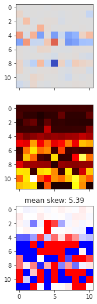
show_heatmap(val['regr/mi'], vmin=0, vmax=None, cmap='magma',
annot=False, cbar_kws={'pad': 0.005}, figsize=(70, 2.2));
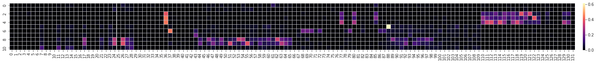
val['regr/mi'].shape
(11, 132)
mi = val['regr/mi']
mi.shape
(11, 132)
scales, level_ids = vae.latent_scales()
level_ids
{'group-0_scale-4_0': range(0, 11),
'group-1_scale-4_1': range(11, 22),
'group-2_scale-4_2': range(22, 33),
'group-3_scale-4_3': range(33, 44),
'group-4_scale-8_0': range(44, 55),
'group-5_scale-8_1': range(55, 66),
'group-6_scale-8_2': range(66, 77),
'group-7_scale-8_3': range(77, 88),
'group-8_scale-16_0': range(88, 99),
'group-9_scale-16_1': range(99, 110),
'group-10_scale-16_2': range(110, 121),
'group-11_scale-16_3': range(121, 132)}
mi_scales = np.zeros((len(mi), len(level_ids)))
for j, (key, ids) in enumerate(level_ids.items()):
for i, x in enumerate(mi):
mi_scales[i, j] = x[ids].sum() / x.sum()
mi_scales.shape
(11, 12)
names = tr.dl_tst.dataset.factor_names
_ty = [f"{e} ({i:02d})" for i, e in names.items()]
_tx = [e.split('_')[1] for e in level_ids]
show_heatmap(
r=mi_scales,
vmin=0,
vmax=None,
yticklabels=_ty,
xticklabels=_tx,
cmap='magma',
figsize=(10, 7),
);
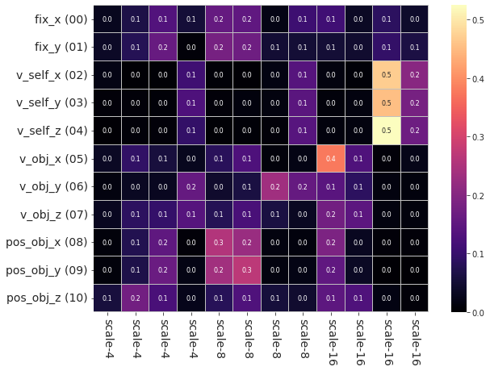
mi_scales2 = np.zeros((len(mi), len(vae.cfg.groups)))
for j, s in enumerate(np.unique(scales)):
_ids = []
for k, ids in level_ids.items():
if f'scale-{s}' in k:
_ids.extend(list(ids))
for i, x in enumerate(mi):
mi_scales2[i, j] = x[_ids].sum() / x.sum()
show_heatmap(
r=mi_scales2,
vmin=0,
vmax=None,
yticklabels=_ty,
xticklabels=np.unique(scales),
cmap='magma',
figsize=(4, 7),
);
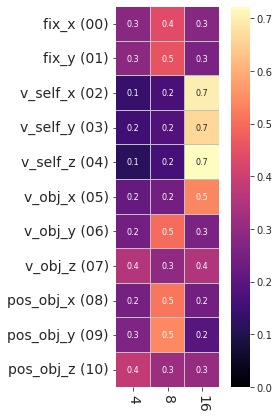
u, s, v = sp_lin.svd(
a=val['z_sample'],
full_matrices=False,
compute_uv=True,
)
s *= 100 / s.sum()
u.shape, s.shape, v.shape
((4096, 132), (132,), (132, 132))
fig, axes = create_figure(2, 1, (13, 7), sharex='all')
axes[0].plot(s, marker='.')
axes[1].plot(np.cumsum(s), lw=3, marker=None)
idx = np.where(np.cumsum(s) > 90)[0][0]
axes[1].axvline(
idx, color='g', ls=':', lw=1.5,
label=f'{idx} latent variables',
)
axes[1].axhline(
90, color='magenta', ls=':', lw=1.5,
label=f'{90}% of variance',
)
axes[1].legend()
axes[1].axhline(0, color='k', ls='--', lw=1.2)
axes[1].axhline(100, color='k', ls='--', lw=1.2)
axes[1].set_ylim((-3, 103))
add_grid(axes)
plt.show()
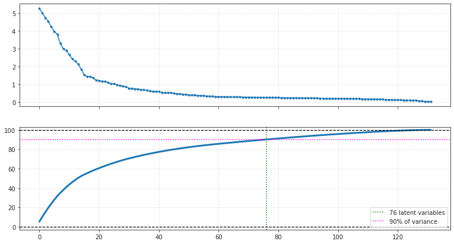
fig, ax = create_figure(figsize=(8, 3))
ax.plot(s, marker='o')
ax.set(xticks=ticks, xticklabels=ticklabels)
ax.grid()
x, norm = next(iter(tr.dl_tst))
x, norm = tr.to([x, norm])
w = 1 / norm
tr.model.eval();
with torch.no_grad():
y, *_ = tr.model(x)
l1 = tr.model.l1_recon(x, y)
l1 = torch.sum(l1, dim=[1, 2, 3])
l1_bal = l1 * w / w.mean()
l1_bal = to_np(l1_bal)
l1 = to_np(l1)
l1.shape
(256,)
np.argmax(l1)
70
np.argmax(l1_bal)
71
i = 71
show_opticflow_full(x[i])
show_opticflow_full(y[i]);
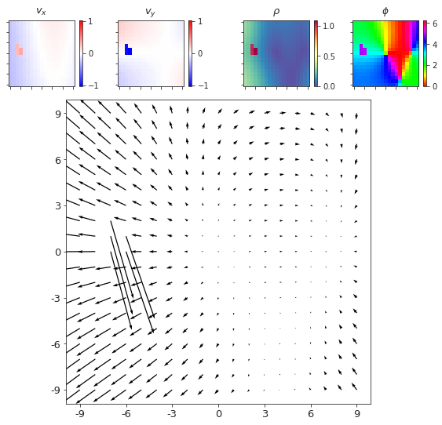
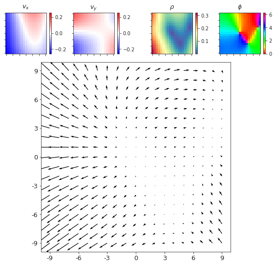
epe = endpoint_error(x, y)
epe_bal = epe * w / w.mean()
epe_bal = to_np(epe_bal)
np.argmax(epe_bal)
204
i = 204
show_opticflow_full(x[i])
show_opticflow_full(y[i]);
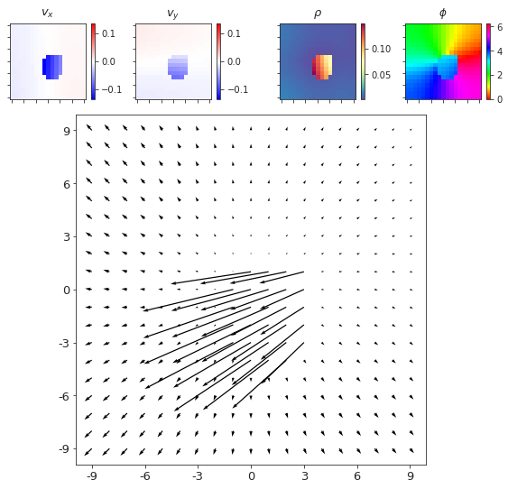
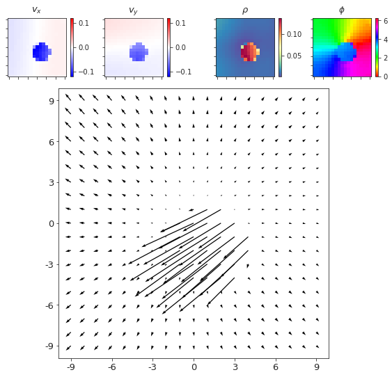
cos = 1 - tr.model.cos_recon(x, y)
cos = torch.sum(cos, dim=[1, 2])
cos = to_np(cos)
plt.plot(cos);
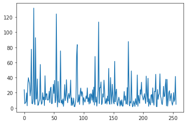
np.argmax(cos)
16
i = 16
show_opticflow_full(x[i])
show_opticflow_full(y[i]);
 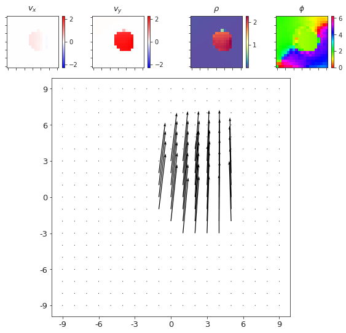
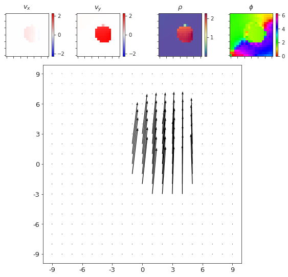
l2_true = vae.l2_recon(x, y)
l2_true = torch.sum(l2_true, dim=[1, 2, 3])
l2_true = l2_true * w / w.mean()
l2_true = to_np(l2_true)
l2_true.sum()
395.2473
l1_bal.sum(), l2_true.sum(), epe_bal.sum(), cos.sum()
(876.747, 395.2473, 1995.8989, 4570.678)
np.argsort(epe_bal)[:5]
array([ 66, 222, 185, 84, 87])
epe_bal[66], epe[66]
(3.0489206, tensor(5.2588, device='cuda:2'))
i = 185
show_opticflow_full(x[i])
show_opticflow_full(y[i]);
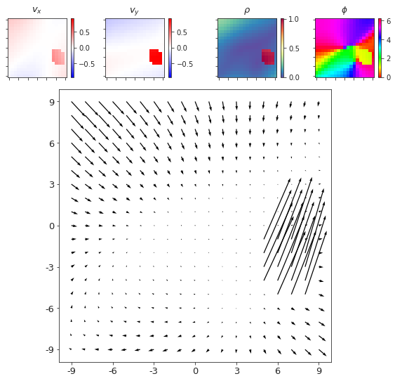
np.argsort(epe_bal)[-2]
216
i = 216
show_opticflow_full(x[i])
show_opticflow_full(y[i]);
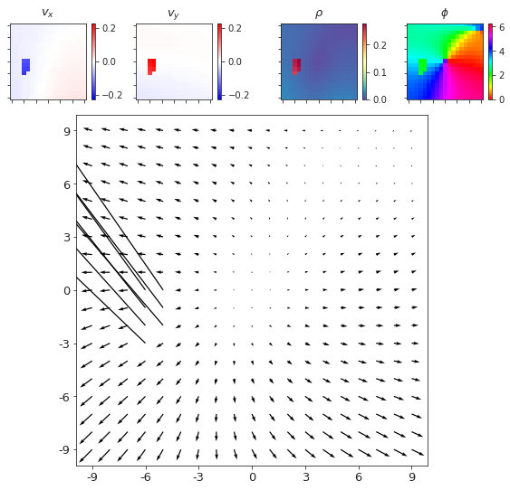
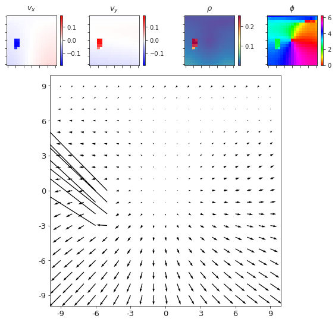
np.argmin(cos)
56
i = 56
show_opticflow_full(x[i])
show_opticflow_full(y[i]);
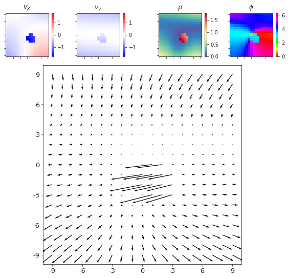
w2p = {}
norms_expand = {}
for i, layer in enumerate(vae.expand):
w2p[i] = to_np(layer.weight)
_norm = to_np(torch.linalg.norm(layer.weight, dim=1).sum())
norms_expand[i] = _norm
print({i: np.round(v, 3) for i, v in norms_expand.items()})
{0: 84.471, 1: 217.295, 2: 652.654, 3: 302.024, 4: 1129.283, 5: 1069.541, 6: 576.633}
for i, _w in w2p.items():
_w
_w.shape
(50, 50, 16, 16)
plt.imshow(_w[9, 26])
<matplotlib.image.AxesImage at 0x7f6f492ca5e0>
vae.cfg.n_latent_per_group
50
fig, axes = create_figure(num, num, (130, 90), 'all', 'all')
for z, k in itertools.product(range(num), range(num)):
ax = axes[z, k]
im = ax.imshow(_w[z, k])
plt.colorbar(im, ax=ax)
if z == 0:
ax.set_title(f"k = {k}", fontsize=13)
if k == 0:
ax.set_ylabel(f"z = {z}", fontsize=13)
fig.suptitle(f'Expand_{i} (scale = {scales[i]})', fontsize=15, y=1.02)
plt.show()
---------------------------------------------------------------------------
KeyboardInterrupt Traceback (most recent call last)
Input In [78], in <cell line: 2>()
2 for z, k in itertools.product(range(num), range(num)):
3 ax = axes[z, k]
----> 4 im = ax.imshow(_w[z, k])
5 plt.colorbar(im, ax=ax)
6 if z == 0:
File ~/anaconda3/lib/python3.8/site-packages/matplotlib/__init__.py:1447, in _preprocess_data.<locals>.inner(ax, data, *args, **kwargs)
1444 @functools.wraps(func)
1445 def inner(ax, *args, data=None, **kwargs):
1446 if data is None:
-> 1447 return func(ax, *map(sanitize_sequence, args), **kwargs)
1449 bound = new_sig.bind(ax, *args, **kwargs)
1450 auto_label = (bound.arguments.get(label_namer)
1451 or bound.kwargs.get(label_namer))
File ~/anaconda3/lib/python3.8/site-packages/matplotlib/axes/_axes.py:5533, in Axes.imshow(self, X, cmap, norm, aspect, interpolation, alpha, vmin, vmax, origin, extent, filternorm, filterrad, resample, url, **kwargs)
5529 im.set_url(url)
5531 # update ax.dataLim, and, if autoscaling, set viewLim
5532 # to tightly fit the image, regardless of dataLim.
-> 5533 im.set_extent(im.get_extent())
5535 self.add_image(im)
5536 return im
File ~/anaconda3/lib/python3.8/site-packages/matplotlib/image.py:960, in AxesImage.set_extent(self, extent)
958 self.axes.set_xlim((xmin, xmax), auto=None)
959 if self.axes._autoscaleYon:
--> 960 self.axes.set_ylim((ymin, ymax), auto=None)
961 self.stale = True
File ~/anaconda3/lib/python3.8/site-packages/matplotlib/axes/_base.py:3616, in _AxesBase.set_ylim(self, bottom, top, emit, auto, ymin, ymax)
3614 for other in self._shared_y_axes.get_siblings(self):
3615 if other is not self:
-> 3616 other.set_ylim(self.viewLim.intervaly,
3617 emit=False, auto=auto)
3618 if other.figure != self.figure:
3619 other.figure.canvas.draw_idle()
File ~/anaconda3/lib/python3.8/site-packages/matplotlib/axes/_base.py:651, in _AxesBase.viewLim(self)
649 @property
650 def viewLim(self):
--> 651 self._unstale_viewLim()
652 return self._viewLim
File ~/anaconda3/lib/python3.8/site-packages/matplotlib/axes/_base.py:641, in _AxesBase._unstale_viewLim(self)
635 def _unstale_viewLim(self):
636 # We should arrange to store this information once per share-group
637 # instead of on every axis.
638 scalex = any(ax._stale_viewlim_x
639 for ax in self._shared_x_axes.get_siblings(self))
640 scaley = any(ax._stale_viewlim_y
--> 641 for ax in self._shared_y_axes.get_siblings(self))
642 if scalex or scaley:
643 for ax in self._shared_x_axes.get_siblings(self):
File ~/anaconda3/lib/python3.8/site-packages/matplotlib/cbook/__init__.py:855, in Grouper.get_siblings(self, a)
853 def get_siblings(self, a):
854 """Return all of the items joined with *a*, including itself."""
--> 855 self.clean()
856 siblings = self._mapping.get(weakref.ref(a), [weakref.ref(a)])
857 return [x() for x in siblings]
File ~/anaconda3/lib/python3.8/site-packages/matplotlib/cbook/__init__.py:807, in Grouper.clean(self)
805 """Clean dead weak references from the dictionary."""
806 mapping = self._mapping
--> 807 to_drop = [key for key in mapping if key() is None]
808 for key in to_drop:
809 val = mapping.pop(key)
File ~/anaconda3/lib/python3.8/site-packages/matplotlib/cbook/__init__.py:807, in <listcomp>(.0)
805 """Clean dead weak references from the dictionary."""
806 mapping = self._mapping
--> 807 to_drop = [key for key in mapping if key() is None]
808 for key in to_drop:
809 val = mapping.pop(key)
KeyboardInterrupt:
Error in callback <function install_repl_displayhook.<locals>.post_execute at 0x7f7173bef8b0> (for post_execute):
---------------------------------------------------------------------------
KeyboardInterrupt Traceback (most recent call last)
File ~/anaconda3/lib/python3.8/site-packages/matplotlib/pyplot.py:138, in install_repl_displayhook.<locals>.post_execute()
136 def post_execute():
137 if matplotlib.is_interactive():
--> 138 draw_all()
File ~/anaconda3/lib/python3.8/site-packages/matplotlib/_pylab_helpers.py:138, in Gcf.draw_all(cls, force)
136 for manager in cls.get_all_fig_managers():
137 if force or manager.canvas.figure.stale:
--> 138 manager.canvas.draw_idle()
File ~/anaconda3/lib/python3.8/site-packages/matplotlib/backend_bases.py:2012, in FigureCanvasBase.draw_idle(self, *args, **kwargs)
2010 if not self._is_idle_drawing:
2011 with self._idle_draw_cntx():
-> 2012 self.draw(*args, **kwargs)
File ~/anaconda3/lib/python3.8/site-packages/matplotlib/backends/backend_agg.py:407, in FigureCanvasAgg.draw(self)
403 # Acquire a lock on the shared font cache.
404 with RendererAgg.lock, \
405 (self.toolbar._wait_cursor_for_draw_cm() if self.toolbar
406 else nullcontext()):
--> 407 self.figure.draw(self.renderer)
408 # A GUI class may be need to update a window using this draw, so
409 # don't forget to call the superclass.
410 super().draw()
File ~/anaconda3/lib/python3.8/site-packages/matplotlib/artist.py:41, in allow_rasterization.<locals>.draw_wrapper(artist, renderer, *args, **kwargs)
38 if artist.get_agg_filter() is not None:
39 renderer.start_filter()
---> 41 return draw(artist, renderer, *args, **kwargs)
42 finally:
43 if artist.get_agg_filter() is not None:
File ~/anaconda3/lib/python3.8/site-packages/matplotlib/figure.py:1863, in Figure.draw(self, renderer)
1860 # ValueError can occur when resizing a window.
1862 self.patch.draw(renderer)
-> 1863 mimage._draw_list_compositing_images(
1864 renderer, self, artists, self.suppressComposite)
1866 renderer.close_group('figure')
1867 finally:
File ~/anaconda3/lib/python3.8/site-packages/matplotlib/image.py:131, in _draw_list_compositing_images(renderer, parent, artists, suppress_composite)
129 if not_composite or not has_images:
130 for a in artists:
--> 131 a.draw(renderer)
132 else:
133 # Composite any adjacent images together
134 image_group = []
File ~/anaconda3/lib/python3.8/site-packages/matplotlib/artist.py:41, in allow_rasterization.<locals>.draw_wrapper(artist, renderer, *args, **kwargs)
38 if artist.get_agg_filter() is not None:
39 renderer.start_filter()
---> 41 return draw(artist, renderer, *args, **kwargs)
42 finally:
43 if artist.get_agg_filter() is not None:
File ~/anaconda3/lib/python3.8/site-packages/matplotlib/cbook/deprecation.py:411, in _delete_parameter.<locals>.wrapper(*inner_args, **inner_kwargs)
401 deprecation_addendum = (
402 f"If any parameter follows {name!r}, they should be passed as "
403 f"keyword, not positionally.")
404 warn_deprecated(
405 since,
406 name=repr(name),
(...)
409 else deprecation_addendum,
410 **kwargs)
--> 411 return func(*inner_args, **inner_kwargs)
File ~/anaconda3/lib/python3.8/site-packages/matplotlib/axes/_base.py:2747, in _AxesBase.draw(self, renderer, inframe)
2744 a.draw(renderer)
2745 renderer.stop_rasterizing()
-> 2747 mimage._draw_list_compositing_images(renderer, self, artists)
2749 renderer.close_group('axes')
2750 self.stale = False
File ~/anaconda3/lib/python3.8/site-packages/matplotlib/image.py:131, in _draw_list_compositing_images(renderer, parent, artists, suppress_composite)
129 if not_composite or not has_images:
130 for a in artists:
--> 131 a.draw(renderer)
132 else:
133 # Composite any adjacent images together
134 image_group = []
File ~/anaconda3/lib/python3.8/site-packages/matplotlib/artist.py:41, in allow_rasterization.<locals>.draw_wrapper(artist, renderer, *args, **kwargs)
38 if artist.get_agg_filter() is not None:
39 renderer.start_filter()
---> 41 return draw(artist, renderer, *args, **kwargs)
42 finally:
43 if artist.get_agg_filter() is not None:
File ~/anaconda3/lib/python3.8/site-packages/matplotlib/axis.py:1176, in Axis.draw(self, renderer, *args, **kwargs)
1169 tick.draw(renderer)
1171 # scale up the axis label box to also find the neighbors, not
1172 # just the tick labels that actually overlap note we need a
1173 # *copy* of the axis label box because we don't want to scale
1174 # the actual bbox
-> 1176 self._update_label_position(renderer)
1178 self.label.draw(renderer)
1180 self._update_offset_text_position(ticklabelBoxes, ticklabelBoxes2)
File ~/anaconda3/lib/python3.8/site-packages/matplotlib/axis.py:2353, in YAxis._update_label_position(self, renderer)
2349 return
2351 # get bounding boxes for this axis and any siblings
2352 # that have been set by `fig.align_ylabels()`
-> 2353 bboxes, bboxes2 = self._get_tick_boxes_siblings(renderer=renderer)
2355 x, y = self.label.get_position()
2356 if self.label_position == 'left':
File ~/anaconda3/lib/python3.8/site-packages/matplotlib/axis.py:2337, in YAxis._get_tick_boxes_siblings(self, renderer)
2335 # if we want to align labels from other axes:
2336 for axx in grp.get_siblings(self.axes):
-> 2337 ticks_to_draw = axx.yaxis._update_ticks()
2338 tlb, tlb2 = axx.yaxis._get_tick_bboxes(ticks_to_draw, renderer)
2339 bboxes.extend(tlb)
File ~/anaconda3/lib/python3.8/site-packages/matplotlib/axis.py:1029, in Axis._update_ticks(self)
1027 tick.set_label1(label)
1028 tick.set_label2(label)
-> 1029 minor_locs = self.get_minorticklocs()
1030 minor_labels = self.minor.formatter.format_ticks(minor_locs)
1031 minor_ticks = self.get_minor_ticks(len(minor_locs))
File ~/anaconda3/lib/python3.8/site-packages/matplotlib/axis.py:1293, in Axis.get_minorticklocs(self)
1291 tr_minor_locs = transform.transform(minor_locs)
1292 tr_major_locs = transform.transform(major_locs)
-> 1293 lo, hi = sorted(transform.transform(self.get_view_interval()))
1294 # Use the transformed view limits as scale. 1e-5 is the default rtol
1295 # for np.isclose.
1296 tol = (hi - lo) * 1e-5
File ~/anaconda3/lib/python3.8/site-packages/matplotlib/axis.py:1946, in _make_getset_interval.<locals>.getter(self)
1944 def getter(self):
1945 # docstring inherited.
-> 1946 return getattr(getattr(self.axes, lim_name), attr_name)
File ~/anaconda3/lib/python3.8/site-packages/matplotlib/axes/_base.py:651, in _AxesBase.viewLim(self)
649 @property
650 def viewLim(self):
--> 651 self._unstale_viewLim()
652 return self._viewLim
File ~/anaconda3/lib/python3.8/site-packages/matplotlib/axes/_base.py:640, in _AxesBase._unstale_viewLim(self)
635 def _unstale_viewLim(self):
636 # We should arrange to store this information once per share-group
637 # instead of on every axis.
638 scalex = any(ax._stale_viewlim_x
639 for ax in self._shared_x_axes.get_siblings(self))
--> 640 scaley = any(ax._stale_viewlim_y
641 for ax in self._shared_y_axes.get_siblings(self))
642 if scalex or scaley:
643 for ax in self._shared_x_axes.get_siblings(self):
File ~/anaconda3/lib/python3.8/site-packages/matplotlib/axes/_base.py:640, in <genexpr>(.0)
635 def _unstale_viewLim(self):
636 # We should arrange to store this information once per share-group
637 # instead of on every axis.
638 scalex = any(ax._stale_viewlim_x
639 for ax in self._shared_x_axes.get_siblings(self))
--> 640 scaley = any(ax._stale_viewlim_y
641 for ax in self._shared_y_axes.get_siblings(self))
642 if scalex or scaley:
643 for ax in self._shared_x_axes.get_siblings(self):
KeyboardInterrupt:
Error in callback <function flush_figures at 0x7f7173c08940> (for post_execute):
---------------------------------------------------------------------------
KeyboardInterrupt Traceback (most recent call last)
File ~/anaconda3/lib/python3.8/site-packages/matplotlib_inline/backend_inline.py:121, in flush_figures()
118 if InlineBackend.instance().close_figures:
119 # ignore the tracking, just draw and close all figures
120 try:
--> 121 return show(True)
122 except Exception as e:
123 # safely show traceback if in IPython, else raise
124 ip = get_ipython()
File ~/anaconda3/lib/python3.8/site-packages/matplotlib_inline/backend_inline.py:41, in show(close, block)
39 try:
40 for figure_manager in Gcf.get_all_fig_managers():
---> 41 display(
42 figure_manager.canvas.figure,
43 metadata=_fetch_figure_metadata(figure_manager.canvas.figure)
44 )
45 finally:
46 show._to_draw = []
File ~/anaconda3/lib/python3.8/site-packages/IPython/core/display_functions.py:298, in display(include, exclude, metadata, transient, display_id, raw, clear, *objs, **kwargs)
296 publish_display_data(data=obj, metadata=metadata, **kwargs)
297 else:
--> 298 format_dict, md_dict = format(obj, include=include, exclude=exclude)
299 if not format_dict:
300 # nothing to display (e.g. _ipython_display_ took over)
301 continue
File ~/anaconda3/lib/python3.8/site-packages/IPython/core/formatters.py:178, in DisplayFormatter.format(self, obj, include, exclude)
176 md = None
177 try:
--> 178 data = formatter(obj)
179 except:
180 # FIXME: log the exception
181 raise
File ~/anaconda3/lib/python3.8/site-packages/decorator.py:232, in decorate.<locals>.fun(*args, **kw)
230 if not kwsyntax:
231 args, kw = fix(args, kw, sig)
--> 232 return caller(func, *(extras + args), **kw)
File ~/anaconda3/lib/python3.8/site-packages/IPython/core/formatters.py:222, in catch_format_error(method, self, *args, **kwargs)
220 """show traceback on failed format call"""
221 try:
--> 222 r = method(self, *args, **kwargs)
223 except NotImplementedError:
224 # don't warn on NotImplementedErrors
225 return self._check_return(None, args[0])
File ~/anaconda3/lib/python3.8/site-packages/IPython/core/formatters.py:339, in BaseFormatter.__call__(self, obj)
337 pass
338 else:
--> 339 return printer(obj)
340 # Finally look for special method names
341 method = get_real_method(obj, self.print_method)
File ~/anaconda3/lib/python3.8/site-packages/IPython/core/pylabtools.py:151, in print_figure(fig, fmt, bbox_inches, base64, **kwargs)
148 from matplotlib.backend_bases import FigureCanvasBase
149 FigureCanvasBase(fig)
--> 151 fig.canvas.print_figure(bytes_io, **kw)
152 data = bytes_io.getvalue()
153 if fmt == 'svg':
File ~/anaconda3/lib/python3.8/site-packages/matplotlib/backend_bases.py:2193, in FigureCanvasBase.print_figure(self, filename, dpi, facecolor, edgecolor, orientation, format, bbox_inches, pad_inches, bbox_extra_artists, backend, **kwargs)
2189 ctx = (renderer._draw_disabled()
2190 if hasattr(renderer, '_draw_disabled')
2191 else suppress())
2192 with ctx:
-> 2193 self.figure.draw(renderer)
2195 bbox_inches = self.figure.get_tightbbox(
2196 renderer, bbox_extra_artists=bbox_extra_artists)
2197 if pad_inches is None:
File ~/anaconda3/lib/python3.8/site-packages/matplotlib/artist.py:41, in allow_rasterization.<locals>.draw_wrapper(artist, renderer, *args, **kwargs)
38 if artist.get_agg_filter() is not None:
39 renderer.start_filter()
---> 41 return draw(artist, renderer, *args, **kwargs)
42 finally:
43 if artist.get_agg_filter() is not None:
File ~/anaconda3/lib/python3.8/site-packages/matplotlib/figure.py:1863, in Figure.draw(self, renderer)
1860 # ValueError can occur when resizing a window.
1862 self.patch.draw(renderer)
-> 1863 mimage._draw_list_compositing_images(
1864 renderer, self, artists, self.suppressComposite)
1866 renderer.close_group('figure')
1867 finally:
File ~/anaconda3/lib/python3.8/site-packages/matplotlib/image.py:131, in _draw_list_compositing_images(renderer, parent, artists, suppress_composite)
129 if not_composite or not has_images:
130 for a in artists:
--> 131 a.draw(renderer)
132 else:
133 # Composite any adjacent images together
134 image_group = []
File ~/anaconda3/lib/python3.8/site-packages/matplotlib/artist.py:41, in allow_rasterization.<locals>.draw_wrapper(artist, renderer, *args, **kwargs)
38 if artist.get_agg_filter() is not None:
39 renderer.start_filter()
---> 41 return draw(artist, renderer, *args, **kwargs)
42 finally:
43 if artist.get_agg_filter() is not None:
File ~/anaconda3/lib/python3.8/site-packages/matplotlib/cbook/deprecation.py:411, in _delete_parameter.<locals>.wrapper(*inner_args, **inner_kwargs)
401 deprecation_addendum = (
402 f"If any parameter follows {name!r}, they should be passed as "
403 f"keyword, not positionally.")
404 warn_deprecated(
405 since,
406 name=repr(name),
(...)
409 else deprecation_addendum,
410 **kwargs)
--> 411 return func(*inner_args, **inner_kwargs)
File ~/anaconda3/lib/python3.8/site-packages/matplotlib/axes/_base.py:2747, in _AxesBase.draw(self, renderer, inframe)
2744 a.draw(renderer)
2745 renderer.stop_rasterizing()
-> 2747 mimage._draw_list_compositing_images(renderer, self, artists)
2749 renderer.close_group('axes')
2750 self.stale = False
File ~/anaconda3/lib/python3.8/site-packages/matplotlib/image.py:131, in _draw_list_compositing_images(renderer, parent, artists, suppress_composite)
129 if not_composite or not has_images:
130 for a in artists:
--> 131 a.draw(renderer)
132 else:
133 # Composite any adjacent images together
134 image_group = []
File ~/anaconda3/lib/python3.8/site-packages/matplotlib/artist.py:41, in allow_rasterization.<locals>.draw_wrapper(artist, renderer, *args, **kwargs)
38 if artist.get_agg_filter() is not None:
39 renderer.start_filter()
---> 41 return draw(artist, renderer, *args, **kwargs)
42 finally:
43 if artist.get_agg_filter() is not None:
File ~/anaconda3/lib/python3.8/site-packages/matplotlib/axis.py:1164, in Axis.draw(self, renderer, *args, **kwargs)
1161 return
1162 renderer.open_group(__name__, gid=self.get_gid())
-> 1164 ticks_to_draw = self._update_ticks()
1165 ticklabelBoxes, ticklabelBoxes2 = self._get_tick_bboxes(ticks_to_draw,
1166 renderer)
1168 for tick in ticks_to_draw:
File ~/anaconda3/lib/python3.8/site-packages/matplotlib/axis.py:1022, in Axis._update_ticks(self)
1017 """
1018 Update ticks (position and labels) using the current data interval of
1019 the axes. Return the list of ticks that will be drawn.
1020 """
1021 major_locs = self.get_majorticklocs()
-> 1022 major_labels = self.major.formatter.format_ticks(major_locs)
1023 major_ticks = self.get_major_ticks(len(major_locs))
1024 self.major.formatter.set_locs(major_locs)
File ~/anaconda3/lib/python3.8/site-packages/matplotlib/ticker.py:262, in Formatter.format_ticks(self, values)
260 def format_ticks(self, values):
261 """Return the tick labels for all the ticks at once."""
--> 262 self.set_locs(values)
263 return [self(value, i) for i, value in enumerate(values)]
File ~/anaconda3/lib/python3.8/site-packages/matplotlib/ticker.py:794, in ScalarFormatter.set_locs(self, locs)
792 if self._useOffset:
793 self._compute_offset()
--> 794 self._set_order_of_magnitude()
795 self._set_format()
File ~/anaconda3/lib/python3.8/site-packages/matplotlib/ticker.py:848, in ScalarFormatter._set_order_of_magnitude(self)
846 return
847 # restrict to visible ticks
--> 848 vmin, vmax = sorted(self.axis.get_view_interval())
849 locs = np.asarray(self.locs)
850 locs = locs[(vmin <= locs) & (locs <= vmax)]
File ~/anaconda3/lib/python3.8/site-packages/matplotlib/axis.py:1946, in _make_getset_interval.<locals>.getter(self)
1944 def getter(self):
1945 # docstring inherited.
-> 1946 return getattr(getattr(self.axes, lim_name), attr_name)
File ~/anaconda3/lib/python3.8/site-packages/matplotlib/axes/_base.py:651, in _AxesBase.viewLim(self)
649 @property
650 def viewLim(self):
--> 651 self._unstale_viewLim()
652 return self._viewLim
File ~/anaconda3/lib/python3.8/site-packages/matplotlib/axes/_base.py:638, in _AxesBase._unstale_viewLim(self)
635 def _unstale_viewLim(self):
636 # We should arrange to store this information once per share-group
637 # instead of on every axis.
--> 638 scalex = any(ax._stale_viewlim_x
639 for ax in self._shared_x_axes.get_siblings(self))
640 scaley = any(ax._stale_viewlim_y
641 for ax in self._shared_y_axes.get_siblings(self))
642 if scalex or scaley:
File ~/anaconda3/lib/python3.8/site-packages/matplotlib/axes/_base.py:638, in <genexpr>(.0)
635 def _unstale_viewLim(self):
636 # We should arrange to store this information once per share-group
637 # instead of on every axis.
--> 638 scalex = any(ax._stale_viewlim_x
639 for ax in self._shared_x_axes.get_siblings(self))
640 scaley = any(ax._stale_viewlim_y
641 for ax in self._shared_y_axes.get_siblings(self))
642 if scalex or scaley:
KeyboardInterrupt:
scales, _ = tr.model.latent_scales()
num = vae.cfg.n_latent_per_group
for i, _w in w2p.items():
fig, axes = create_figure(num, num, (50, 30), 'all', 'all', tight_layout=True)
for z, k in itertools.product(range(num), range(num)):
ax = axes[z, k]
im = ax.imshow(_w[z, k])
plt.colorbar(im, ax=ax)
if z == 0:
ax.set_title(f"k = {k}", fontsize=13)
if k == 0:
ax.set_ylabel(f"z = {z}", fontsize=13)
fig.suptitle(f'Expand_{i} (scale = {scales[i]})', fontsize=15, y=1.02)
plt.show()
---------------------------------------------------------------------------
KeyboardInterrupt Traceback (most recent call last)
Input In [76], in <cell line: 4>()
6 for z, k in itertools.product(range(num), range(num)):
7 ax = axes[z, k]
----> 8 im = ax.imshow(_w[z, k])
9 plt.colorbar(im, ax=ax)
10 if z == 0:
File ~/anaconda3/lib/python3.8/site-packages/matplotlib/__init__.py:1447, in _preprocess_data.<locals>.inner(ax, data, *args, **kwargs)
1444 @functools.wraps(func)
1445 def inner(ax, *args, data=None, **kwargs):
1446 if data is None:
-> 1447 return func(ax, *map(sanitize_sequence, args), **kwargs)
1449 bound = new_sig.bind(ax, *args, **kwargs)
1450 auto_label = (bound.arguments.get(label_namer)
1451 or bound.kwargs.get(label_namer))
File ~/anaconda3/lib/python3.8/site-packages/matplotlib/axes/_axes.py:5533, in Axes.imshow(self, X, cmap, norm, aspect, interpolation, alpha, vmin, vmax, origin, extent, filternorm, filterrad, resample, url, **kwargs)
5529 im.set_url(url)
5531 # update ax.dataLim, and, if autoscaling, set viewLim
5532 # to tightly fit the image, regardless of dataLim.
-> 5533 im.set_extent(im.get_extent())
5535 self.add_image(im)
5536 return im
File ~/anaconda3/lib/python3.8/site-packages/matplotlib/image.py:958, in AxesImage.set_extent(self, extent)
956 self.sticky_edges.y[:] = [ymin, ymax]
957 if self.axes._autoscaleXon:
--> 958 self.axes.set_xlim((xmin, xmax), auto=None)
959 if self.axes._autoscaleYon:
960 self.axes.set_ylim((ymin, ymax), auto=None)
File ~/anaconda3/lib/python3.8/site-packages/matplotlib/axes/_base.py:3344, in _AxesBase.set_xlim(self, left, right, emit, auto, xmin, xmax)
3342 for other in self._shared_x_axes.get_siblings(self):
3343 if other is not self:
-> 3344 other.set_xlim(self.viewLim.intervalx,
3345 emit=False, auto=auto)
3346 if other.figure != self.figure:
3347 other.figure.canvas.draw_idle()
File ~/anaconda3/lib/python3.8/site-packages/matplotlib/axes/_base.py:3334, in _AxesBase.set_xlim(self, left, right, emit, auto, xmin, xmax)
3332 self._viewLim.intervalx = (left, right)
3333 # Mark viewlims as no longer stale without triggering an autoscale.
-> 3334 for ax in self._shared_x_axes.get_siblings(self):
3335 ax._stale_viewlim_x = False
3336 if auto is not None:
File ~/anaconda3/lib/python3.8/site-packages/matplotlib/cbook/__init__.py:855, in Grouper.get_siblings(self, a)
853 def get_siblings(self, a):
854 """Return all of the items joined with *a*, including itself."""
--> 855 self.clean()
856 siblings = self._mapping.get(weakref.ref(a), [weakref.ref(a)])
857 return [x() for x in siblings]
File ~/anaconda3/lib/python3.8/site-packages/matplotlib/cbook/__init__.py:807, in Grouper.clean(self)
805 """Clean dead weak references from the dictionary."""
806 mapping = self._mapping
--> 807 to_drop = [key for key in mapping if key() is None]
808 for key in to_drop:
809 val = mapping.pop(key)
File ~/anaconda3/lib/python3.8/site-packages/matplotlib/cbook/__init__.py:807, in <listcomp>(.0)
805 """Clean dead weak references from the dictionary."""
806 mapping = self._mapping
--> 807 to_drop = [key for key in mapping if key() is None]
808 for key in to_drop:
809 val = mapping.pop(key)
KeyboardInterrupt:
Error in callback <function install_repl_displayhook.<locals>.post_execute at 0x7f7173bef8b0> (for post_execute):
---------------------------------------------------------------------------
KeyboardInterrupt Traceback (most recent call last)
File ~/anaconda3/lib/python3.8/site-packages/matplotlib/pyplot.py:138, in install_repl_displayhook.<locals>.post_execute()
136 def post_execute():
137 if matplotlib.is_interactive():
--> 138 draw_all()
File ~/anaconda3/lib/python3.8/site-packages/matplotlib/_pylab_helpers.py:138, in Gcf.draw_all(cls, force)
136 for manager in cls.get_all_fig_managers():
137 if force or manager.canvas.figure.stale:
--> 138 manager.canvas.draw_idle()
File ~/anaconda3/lib/python3.8/site-packages/matplotlib/backend_bases.py:2012, in FigureCanvasBase.draw_idle(self, *args, **kwargs)
2010 if not self._is_idle_drawing:
2011 with self._idle_draw_cntx():
-> 2012 self.draw(*args, **kwargs)
File ~/anaconda3/lib/python3.8/site-packages/matplotlib/backends/backend_agg.py:407, in FigureCanvasAgg.draw(self)
403 # Acquire a lock on the shared font cache.
404 with RendererAgg.lock, \
405 (self.toolbar._wait_cursor_for_draw_cm() if self.toolbar
406 else nullcontext()):
--> 407 self.figure.draw(self.renderer)
408 # A GUI class may be need to update a window using this draw, so
409 # don't forget to call the superclass.
410 super().draw()
File ~/anaconda3/lib/python3.8/site-packages/matplotlib/artist.py:41, in allow_rasterization.<locals>.draw_wrapper(artist, renderer, *args, **kwargs)
38 if artist.get_agg_filter() is not None:
39 renderer.start_filter()
---> 41 return draw(artist, renderer, *args, **kwargs)
42 finally:
43 if artist.get_agg_filter() is not None:
File ~/anaconda3/lib/python3.8/site-packages/matplotlib/figure.py:1842, in Figure.draw(self, renderer)
1839 else:
1840 ax.apply_aspect()
-> 1842 for child in ax.get_children():
1843 if hasattr(child, 'apply_aspect'):
1844 locator = child.get_axes_locator()
File ~/anaconda3/lib/python3.8/site-packages/matplotlib/axes/_base.py:4038, in _AxesBase.get_children(self)
4036 def get_children(self):
4037 # docstring inherited.
-> 4038 return [
4039 *self.collections,
4040 *self.patches,
4041 *self.lines,
4042 *self.texts,
4043 *self.artists,
4044 *self.spines.values(),
4045 *self._get_axis_list(),
4046 self.title, self._left_title, self._right_title,
4047 *self.tables,
4048 *self.images,
4049 *self.child_axes,
4050 *([self.legend_] if self.legend_ is not None else []),
4051 self.patch,
4052 ]
KeyboardInterrupt:
Error in callback <function flush_figures at 0x7f7173c08940> (for post_execute):
---------------------------------------------------------------------------
KeyboardInterrupt Traceback (most recent call last)
File ~/anaconda3/lib/python3.8/site-packages/matplotlib_inline/backend_inline.py:121, in flush_figures()
118 if InlineBackend.instance().close_figures:
119 # ignore the tracking, just draw and close all figures
120 try:
--> 121 return show(True)
122 except Exception as e:
123 # safely show traceback if in IPython, else raise
124 ip = get_ipython()
File ~/anaconda3/lib/python3.8/site-packages/matplotlib_inline/backend_inline.py:41, in show(close, block)
39 try:
40 for figure_manager in Gcf.get_all_fig_managers():
---> 41 display(
42 figure_manager.canvas.figure,
43 metadata=_fetch_figure_metadata(figure_manager.canvas.figure)
44 )
45 finally:
46 show._to_draw = []
File ~/anaconda3/lib/python3.8/site-packages/IPython/core/display_functions.py:298, in display(include, exclude, metadata, transient, display_id, raw, clear, *objs, **kwargs)
296 publish_display_data(data=obj, metadata=metadata, **kwargs)
297 else:
--> 298 format_dict, md_dict = format(obj, include=include, exclude=exclude)
299 if not format_dict:
300 # nothing to display (e.g. _ipython_display_ took over)
301 continue
File ~/anaconda3/lib/python3.8/site-packages/IPython/core/formatters.py:178, in DisplayFormatter.format(self, obj, include, exclude)
176 md = None
177 try:
--> 178 data = formatter(obj)
179 except:
180 # FIXME: log the exception
181 raise
File ~/anaconda3/lib/python3.8/site-packages/decorator.py:232, in decorate.<locals>.fun(*args, **kw)
230 if not kwsyntax:
231 args, kw = fix(args, kw, sig)
--> 232 return caller(func, *(extras + args), **kw)
File ~/anaconda3/lib/python3.8/site-packages/IPython/core/formatters.py:222, in catch_format_error(method, self, *args, **kwargs)
220 """show traceback on failed format call"""
221 try:
--> 222 r = method(self, *args, **kwargs)
223 except NotImplementedError:
224 # don't warn on NotImplementedErrors
225 return self._check_return(None, args[0])
File ~/anaconda3/lib/python3.8/site-packages/IPython/core/formatters.py:339, in BaseFormatter.__call__(self, obj)
337 pass
338 else:
--> 339 return printer(obj)
340 # Finally look for special method names
341 method = get_real_method(obj, self.print_method)
File ~/anaconda3/lib/python3.8/site-packages/IPython/core/pylabtools.py:151, in print_figure(fig, fmt, bbox_inches, base64, **kwargs)
148 from matplotlib.backend_bases import FigureCanvasBase
149 FigureCanvasBase(fig)
--> 151 fig.canvas.print_figure(bytes_io, **kw)
152 data = bytes_io.getvalue()
153 if fmt == 'svg':
File ~/anaconda3/lib/python3.8/site-packages/matplotlib/backend_bases.py:2193, in FigureCanvasBase.print_figure(self, filename, dpi, facecolor, edgecolor, orientation, format, bbox_inches, pad_inches, bbox_extra_artists, backend, **kwargs)
2189 ctx = (renderer._draw_disabled()
2190 if hasattr(renderer, '_draw_disabled')
2191 else suppress())
2192 with ctx:
-> 2193 self.figure.draw(renderer)
2195 bbox_inches = self.figure.get_tightbbox(
2196 renderer, bbox_extra_artists=bbox_extra_artists)
2197 if pad_inches is None:
File ~/anaconda3/lib/python3.8/site-packages/matplotlib/artist.py:41, in allow_rasterization.<locals>.draw_wrapper(artist, renderer, *args, **kwargs)
38 if artist.get_agg_filter() is not None:
39 renderer.start_filter()
---> 41 return draw(artist, renderer, *args, **kwargs)
42 finally:
43 if artist.get_agg_filter() is not None:
File ~/anaconda3/lib/python3.8/site-packages/matplotlib/figure.py:1857, in Figure.draw(self, renderer)
1855 if self.get_tight_layout() and self.axes:
1856 try:
-> 1857 self.tight_layout(**self._tight_parameters)
1858 except ValueError:
1859 pass
File ~/anaconda3/lib/python3.8/site-packages/matplotlib/cbook/deprecation.py:411, in _delete_parameter.<locals>.wrapper(*inner_args, **inner_kwargs)
401 deprecation_addendum = (
402 f"If any parameter follows {name!r}, they should be passed as "
403 f"keyword, not positionally.")
404 warn_deprecated(
405 since,
406 name=repr(name),
(...)
409 else deprecation_addendum,
410 **kwargs)
--> 411 return func(*inner_args, **inner_kwargs)
File ~/anaconda3/lib/python3.8/site-packages/matplotlib/figure.py:2613, in Figure.tight_layout(self, renderer, pad, h_pad, w_pad, rect)
2609 ctx = (renderer._draw_disabled()
2610 if hasattr(renderer, '_draw_disabled')
2611 else suppress())
2612 with ctx:
-> 2613 kwargs = get_tight_layout_figure(
2614 self, self.axes, subplotspec_list, renderer,
2615 pad=pad, h_pad=h_pad, w_pad=w_pad, rect=rect)
2616 if kwargs:
2617 self.subplots_adjust(**kwargs)
File ~/anaconda3/lib/python3.8/site-packages/matplotlib/tight_layout.py:303, in get_tight_layout_figure(fig, axes_list, subplotspec_list, renderer, pad, h_pad, w_pad, rect)
296 rowNum2, colNum2 = divmod(num2, cols)
298 num1num2_list.append((rowNum1 * div_row * max_ncols +
299 colNum1 * div_col,
300 ((rowNum2 + 1) * div_row - 1) * max_ncols +
301 (colNum2 + 1) * div_col - 1))
--> 303 kwargs = auto_adjust_subplotpars(fig, renderer,
304 nrows_ncols=(max_nrows, max_ncols),
305 num1num2_list=num1num2_list,
306 subplot_list=subplot_list,
307 ax_bbox_list=ax_bbox_list,
308 pad=pad, h_pad=h_pad, w_pad=w_pad)
310 # kwargs can be none if tight_layout fails...
311 if rect is not None and kwargs is not None:
312 # if rect is given, the whole subplots area (including
313 # labels) will fit into the rect instead of the
(...)
317 # auto_adjust_subplotpars twice, where the second run
318 # with adjusted rect parameters.
File ~/anaconda3/lib/python3.8/site-packages/matplotlib/tight_layout.py:84, in auto_adjust_subplotpars(fig, renderer, nrows_ncols, num1num2_list, subplot_list, ax_bbox_list, pad, h_pad, w_pad, rect)
82 if ax.get_visible():
83 try:
---> 84 bb += [ax.get_tightbbox(renderer, for_layout_only=True)]
85 except TypeError:
86 bb += [ax.get_tightbbox(renderer)]
File ~/anaconda3/lib/python3.8/site-packages/matplotlib/axes/_base.py:4169, in _AxesBase.get_tightbbox(self, renderer, call_axes_locator, bbox_extra_artists, for_layout_only)
4167 if bb_yaxis:
4168 bb.append(bb_yaxis)
-> 4169 self._update_title_position(renderer)
4170 axbbox = self.get_window_extent(renderer)
4171 bb.append(axbbox)
File ~/anaconda3/lib/python3.8/site-packages/matplotlib/axes/_base.py:2638, in _AxesBase._update_title_position(self, renderer)
2635 for ax in axs:
2636 if (ax.xaxis.get_ticks_position() in ['top', 'unknown']
2637 or ax.xaxis.get_label_position() == 'top'):
-> 2638 bb = ax.xaxis.get_tightbbox(renderer)
2639 else:
2640 bb = ax.get_window_extent(renderer)
File ~/anaconda3/lib/python3.8/site-packages/matplotlib/axis.py:1111, in Axis.get_tightbbox(self, renderer, for_layout_only)
1107 return
1109 ticks_to_draw = self._update_ticks()
-> 1111 self._update_label_position(renderer)
1113 # go back to just this axis's tick labels
1114 ticklabelBoxes, ticklabelBoxes2 = self._get_tick_bboxes(
1115 ticks_to_draw, renderer)
File ~/anaconda3/lib/python3.8/site-packages/matplotlib/axis.py:2061, in XAxis._update_label_position(self, renderer)
2057 return
2059 # get bounding boxes for this axis and any siblings
2060 # that have been set by `fig.align_xlabels()`
-> 2061 bboxes, bboxes2 = self._get_tick_boxes_siblings(renderer=renderer)
2063 x, y = self.label.get_position()
2064 if self.label_position == 'bottom':
File ~/anaconda3/lib/python3.8/site-packages/matplotlib/axis.py:2045, in XAxis._get_tick_boxes_siblings(self, renderer)
2043 # if we want to align labels from other axes:
2044 for nn, axx in enumerate(grp.get_siblings(self.axes)):
-> 2045 ticks_to_draw = axx.xaxis._update_ticks()
2046 tlb, tlb2 = axx.xaxis._get_tick_bboxes(ticks_to_draw, renderer)
2047 bboxes.extend(tlb)
File ~/anaconda3/lib/python3.8/site-packages/matplotlib/axis.py:1029, in Axis._update_ticks(self)
1027 tick.set_label1(label)
1028 tick.set_label2(label)
-> 1029 minor_locs = self.get_minorticklocs()
1030 minor_labels = self.minor.formatter.format_ticks(minor_locs)
1031 minor_ticks = self.get_minor_ticks(len(minor_locs))
File ~/anaconda3/lib/python3.8/site-packages/matplotlib/axis.py:1293, in Axis.get_minorticklocs(self)
1291 tr_minor_locs = transform.transform(minor_locs)
1292 tr_major_locs = transform.transform(major_locs)
-> 1293 lo, hi = sorted(transform.transform(self.get_view_interval()))
1294 # Use the transformed view limits as scale. 1e-5 is the default rtol
1295 # for np.isclose.
1296 tol = (hi - lo) * 1e-5
File ~/anaconda3/lib/python3.8/site-packages/matplotlib/axis.py:1946, in _make_getset_interval.<locals>.getter(self)
1944 def getter(self):
1945 # docstring inherited.
-> 1946 return getattr(getattr(self.axes, lim_name), attr_name)
File ~/anaconda3/lib/python3.8/site-packages/matplotlib/axes/_base.py:651, in _AxesBase.viewLim(self)
649 @property
650 def viewLim(self):
--> 651 self._unstale_viewLim()
652 return self._viewLim
File ~/anaconda3/lib/python3.8/site-packages/matplotlib/axes/_base.py:640, in _AxesBase._unstale_viewLim(self)
635 def _unstale_viewLim(self):
636 # We should arrange to store this information once per share-group
637 # instead of on every axis.
638 scalex = any(ax._stale_viewlim_x
639 for ax in self._shared_x_axes.get_siblings(self))
--> 640 scaley = any(ax._stale_viewlim_y
641 for ax in self._shared_y_axes.get_siblings(self))
642 if scalex or scaley:
643 for ax in self._shared_x_axes.get_siblings(self):
File ~/anaconda3/lib/python3.8/site-packages/matplotlib/axes/_base.py:640, in <genexpr>(.0)
635 def _unstale_viewLim(self):
636 # We should arrange to store this information once per share-group
637 # instead of on every axis.
638 scalex = any(ax._stale_viewlim_x
639 for ax in self._shared_x_axes.get_siblings(self))
--> 640 scaley = any(ax._stale_viewlim_y
641 for ax in self._shared_y_axes.get_siblings(self))
642 if scalex or scaley:
643 for ax in self._shared_x_axes.get_siblings(self):
KeyboardInterrupt:
from model.vae2d import *
norms = collections.defaultdict(list)
# norms['stem'] = list(to_np(vae.stem.log_weight_norm.exp()))
for cell in vae.enc_tower:
for m in cell.modules():
if hasattr(m, 'log_weight_norm'):
norms[f"{type(cell).__name__}_enc"].extend(
list(to_np(m.log_weight_norm.exp())))
for cell in vae.dec_tower:
for m in cell.modules():
if hasattr(m, 'log_weight_norm'):
norms[f"{type(cell).__name__}_dec"].extend(
list(to_np(m.log_weight_norm.exp())))
for cell in vae.enc_sampler:
for m in cell.modules():
if hasattr(m, 'log_weight_norm'):
norms['enc_sampler'].extend(
list(to_np(m.log_weight_norm.exp())))
for cell in vae.dec_sampler:
for m in cell.modules():
if hasattr(m, 'log_weight_norm'):
norms['dec_sampler'].extend(
list(to_np(m.log_weight_norm.exp())))
for cell in vae.expand:
for m in cell.modules():
if hasattr(m, 'log_weight_norm'):
norms['expand'].extend(
list(to_np(m.log_weight_norm.exp())))
for cell in vae.post:
for m in cell.modules():
if hasattr(m, 'log_weight_norm'):
norms[f"{type(cell).__name__}_post"].extend(
list(to_np(m.log_weight_norm.exp())))
norms = dict(sorted(norms.items()))
fig, axes = create_figure(2, 4, (13, 5), constrained_layout=True)
for i, (k, v) in enumerate(norms.items()):
ax = axes.flat[i]
ax.axvline(1, color='k', ls='--', lw=1.0, zorder=0)
sns.histplot(v, color=f"C{i}", bins=np.linspace(0, 5, 101), label=f"{k} ({np.mean(v): 0.1f})", ax=ax)
title = f"max: {np.max(v):0.1f}\n{100 * (np.array(v) > 5).sum() / len(v):0.1f} % are > 5"
ax.set_title(title, fontsize=10)
ax.set_ylabel('')
ax.legend()
plt.show()
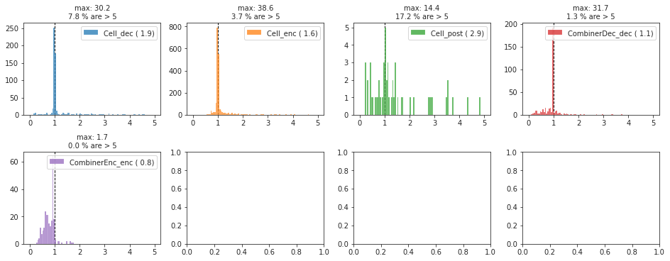
for k in range(len(w)):
_ = show_opticflow_full(w[k], tick_spacing=1)
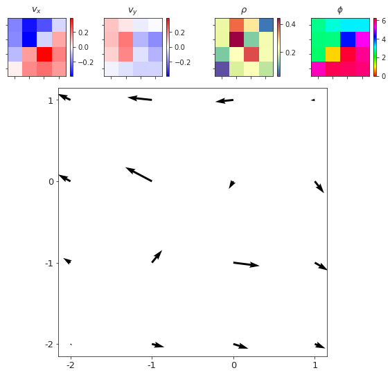
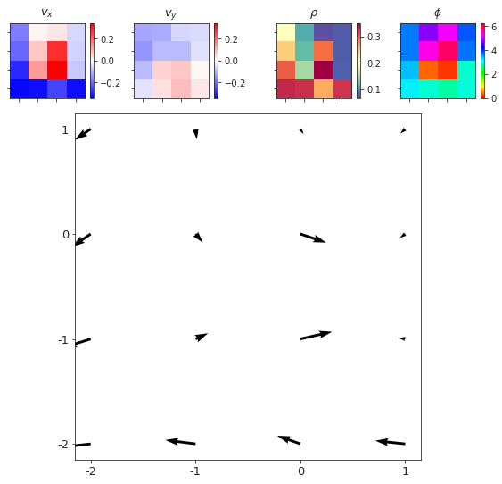
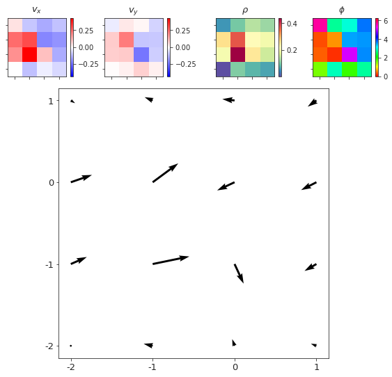
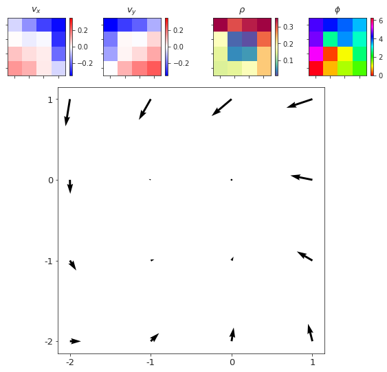
 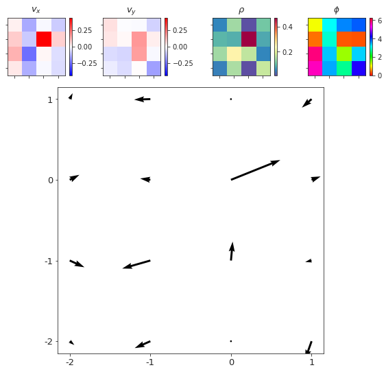
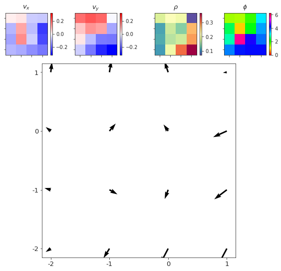
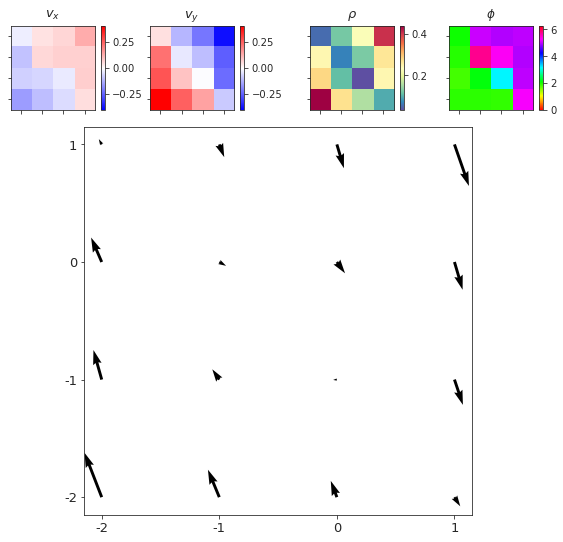
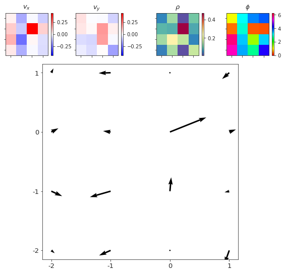
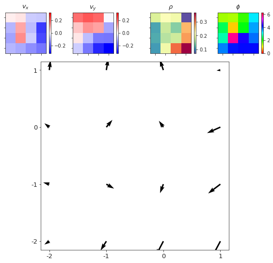
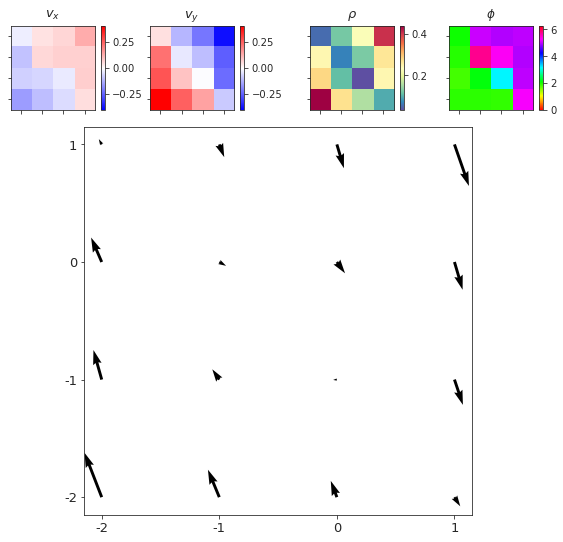
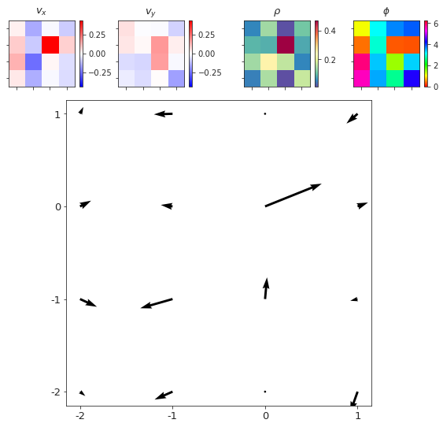
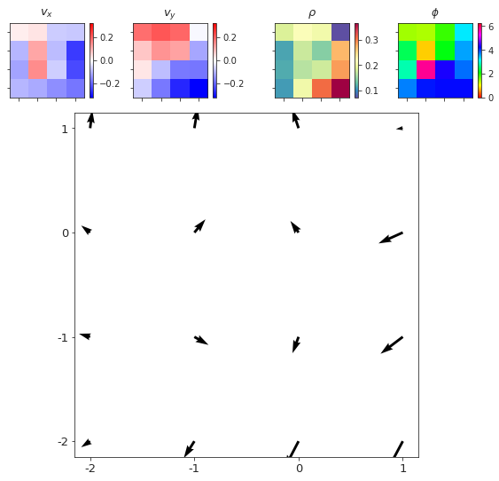
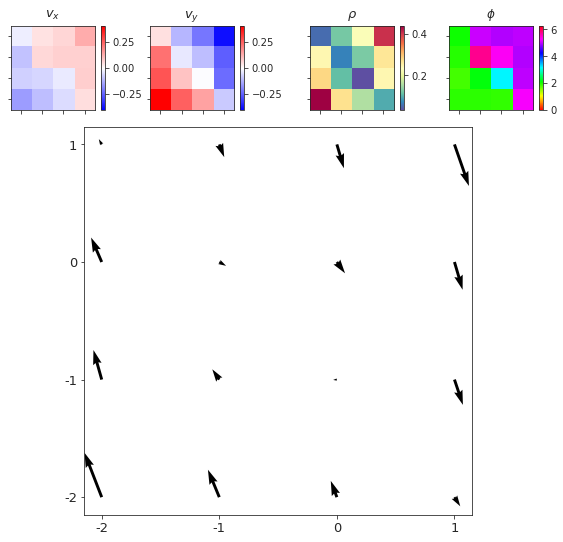
vae.stem
ParametrizedRotConv2d(
2, 8, kernel_size=(4, 4), stride=(1, 1), padding=valid
(parametrizations): ModuleDict(
(weight): ParametrizationList(
(0): _SpectralNorm()
)
)
)
w2p = {}
norms_expand = {}
for i, layer in enumerate(vae.expand):
w2p[i] = to_np(layer.weight)
_norm = to_np(layer.log_weight_norm.exp())
norms_expand[i] = list(_norm)
print({i: np.round(v, 3) for i, v in norms_expand.items()})
{ 0: array([8.042], dtype=float32), 1: array([9.718], dtype=float32), 2: array([24.953], dtype=float32), 3: array([175.119], dtype=float32), 4: array([279.539], dtype=float32), 5: array([63.6], dtype=float32), 6: array([35.539], dtype=float32) }
w2p[0].shape
(4, 1, 4, 4)
scales = vae.latent_scales()
for i, _w in w2p.items():
num = tr.model.cfg.n_latent_per_group
fig, axes = create_figure(1, num, (12, 2.0), 'all', 'all', tight_layout=True)
for z in range(num):
ax = axes.flat[z]
im = ax.imshow(_w[z, 0])
plt.colorbar(im, ax=ax)
ax.set_title(f'z = {z}', fontsize=13)
fig.suptitle(f'Expand_{i} (scale = {scales[i]})', fontsize=15, y=1.02)
plt.show()
 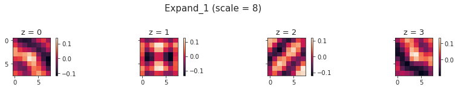
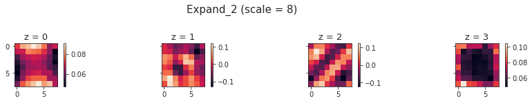
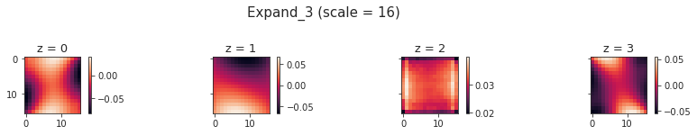
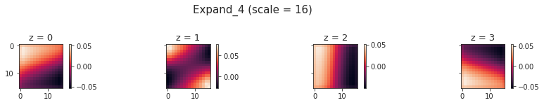
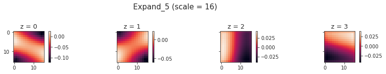
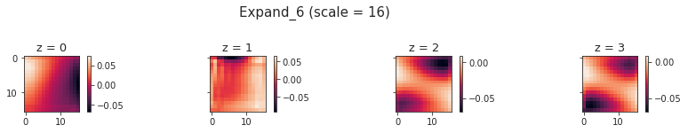
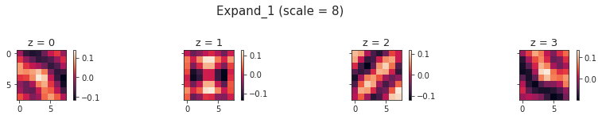
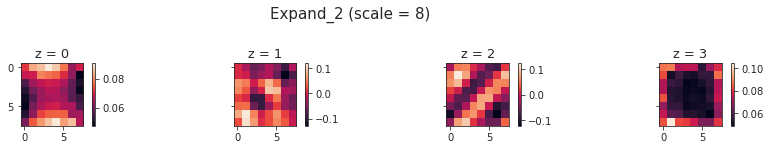
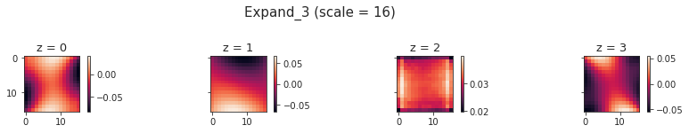
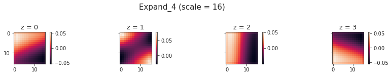
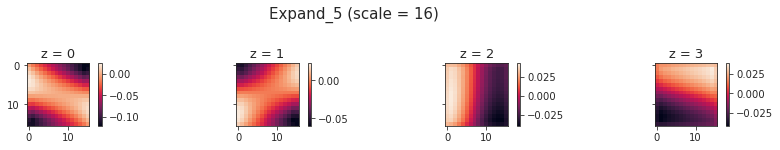
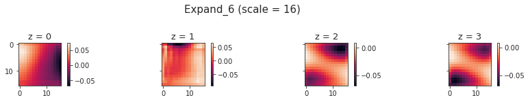
x_sample, z_sample = val['x_sample'], val['z_sample']
ax = sns.histplot(z_sample.ravel(), bins=100)
ax.grid()
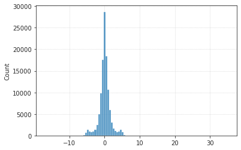
_ = plot_latents_hist_full(z_sample, scales)
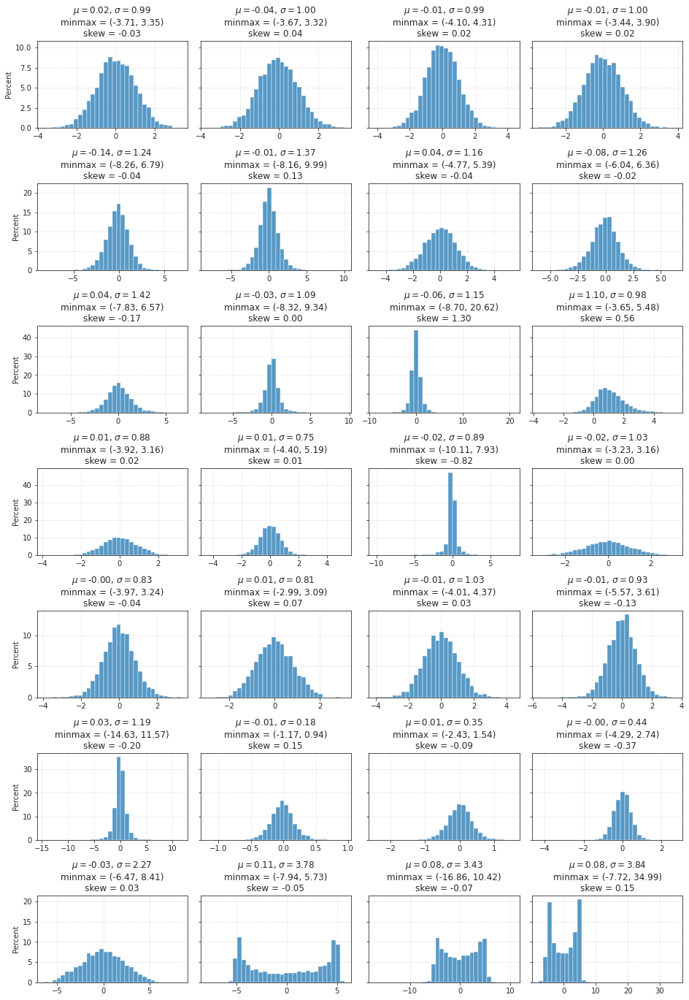
rho, theta = vel2polar(np.transpose(x_sample, (0, 2, 3, 1)))
rho.shape
(4096, 19, 19)
fig, axes = create_figure(1, 3, (13, 3), constrained_layout=True)
sns.histplot(rho.ravel(), stat='percent', label=r'$\rho$', ax=axes[0])
sns.histplot(rho.ravel(), stat='percent', label=r'$\rho$', ax=axes[1])
sns.histplot(np.log(rho[rho.nonzero()]), label=r'$\log \rho$', stat='percent', ax=axes[2])
for ax in axes.flat:
ax.set_ylabel('')
ax.legend(fontsize=15)
for ax in axes[:2].flat:
ax.axvline(1, color='r', ls='--', lw=1.2)
axes[0].set_ylabel('[%]', fontsize=15)
axes[1].set_yscale('log')
axes[2].set_xlim(-10, 2)
axes[2].axvline(0, color='r', ls='--', lw=1.2)
plt.show()

n = 40
bins = np.linspace(-1, 1 + 2 / n, n + 2) - 1 / n
fig, axes = create_figure(2, 2, figsize=(9, 5), sharex='all', sharey='col', constrained_layout=True)
for i in range(2):
lbl = r'$v_x$' if i == 0 else r'$v_y$'
sns.histplot(x_sample[:, i, ...].ravel(), label=lbl, bins=bins, stat='percent', ax=axes[i, 0])
sns.histplot(x_sample[:, i, ...].ravel(), label=lbl, bins=bins, stat='percent', ax=axes[i, 1])
axes[i, 1].set_yscale('log')
for ax in axes.flat:
ax.set_ylabel('')
ax.legend(fontsize=15)
plt.show()
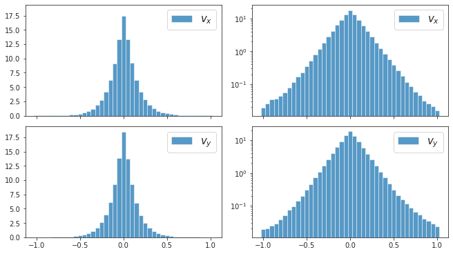
norm = rho.mean(1).mean(1)
sns.histplot(norm);
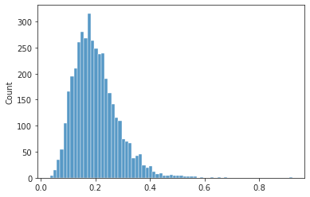
plot_latents_hist(z_sample, scales);
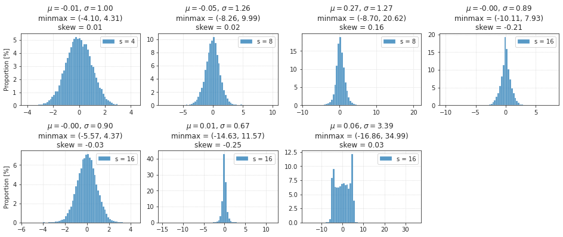
ticks = [
i for i in range(tr.model.cfg.total_latents())
if i % tr.model.cfg.n_latent_per_group == 0
]
ticklabels = [i + 1 for i in ticks]
val['z'].shape
(7500, 28)
u, s, v = sp_lin.svd(val['z'], full_matrices=False, compute_uv=True)
s *= 100 / s.sum()
u.shape, s.shape, v.shape
((7500, 28), (28,), (28, 28))
fig, ax = create_figure(figsize=(8, 3))
ax.plot(s, marker='o')
ax.set(xticks=ticks, xticklabels=ticklabels)
ax.grid()
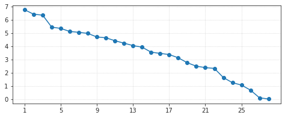
fig, ax = create_figure()
ax.plot(v[3], marker='.')
ax.axhline(0, color='r', ls='--')
ax.set(xticks=ticks, xticklabels=ticklabels)
ax.grid()
plt.show()
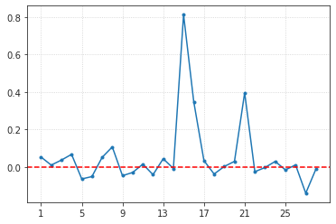
r = 1 - sp_dist.pdist(val['z'].T, 'correlation')
r = sp_dist.squareform(r)
fig, ax = create_figure(1, 1, (15, 12))
sns.heatmap(
r,
center=0,
cmap='bwr',
linewidths=0.005,
linecolor='silver',
square=True,
annot=True,
fmt='.1f',
annot_kws={'fontsize': 8},
ax=ax,
);
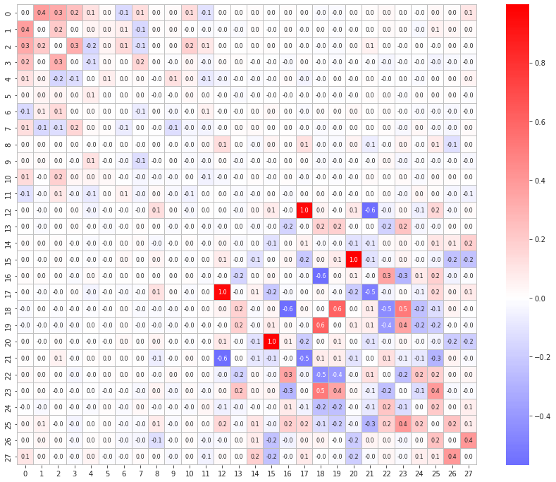
# create datasets
f = pjoin(tr.model.cfg.data_dir, tr.model.cfg.h_pre)
f = h5py.File(f, mode='r')
fix = np.array(f['vld']['fix'], dtype=float)
pos_obj = np.array(f['vld']['pos_obj'], dtype=float)
vel_obj = np.array(f['vld']['vel_obj'], dtype=float)
vel_slf = np.array(f['vld']['vel_slf'], dtype=float)
f.close()
pos = dc(pos_obj)
pos[0] -= fix[:, 0]
pos[1] -= fix[:, 1]
g = np_nans((len(fix), 11))
g[:, :2] = fix
g[:, 2:5] = vel_slf.T
g[:, 5:8] = vel_obj.T
g[:, 8:11] = pos.T
g.shape
(7500, 11)
u_g, s_g, v_g = sp_lin.svd(g, full_matrices=False, compute_uv=True)
s_g *= 100 / s_g.sum()
u_g.shape, s_g.shape, v_g.shape
((7500, 11), (11,), (11, 11))
fig, ax = create_figure(figsize=(8, 3))
ax.plot(s, marker='o', label='latents')
ax.plot(s_g, marker='o', label='ground truth')
ax.set(xticks=ticks, xticklabels=ticklabels)
ax.legend()
ax.grid()

rho, theta = vel2polar(val['x_sample'])
fig, axes = create_figure(1, 3, (13, 3), constrained_layout=True)
sns.histplot(rho.ravel(), stat='percent', label=r'$\rho$', ax=axes[0])
sns.histplot(rho.ravel(), stat='percent', label=r'$\rho$', ax=axes[1])
sns.histplot(np.log(rho[rho.nonzero()]), label=r'$\log \rho$', stat='percent', ax=axes[2])
for ax in axes.flat:
ax.set_ylabel('')
ax.legend(fontsize=15)
for ax in axes[:2].flat:
ax.axvline(1, color='r', ls='--', lw=1.2)
axes[0].set_ylabel('[%]', fontsize=15)
axes[1].set_yscale('log')
axes[2].set_xlim(-10, 2)
axes[2].axvline(0, color='r', ls='--', lw=1.2)
plt.show()
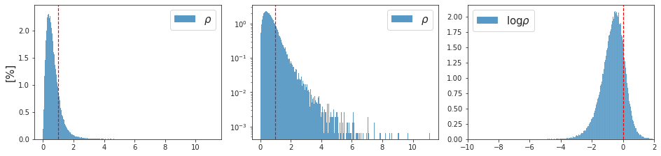
num = 20
z_vld = np_nans((num, len(tr.dl_vld.dataset), tr.model.cfg.total_latents()))
z_tst = np_nans((num, len(tr.dl_tst.dataset), tr.model.cfg.total_latents()))
for i in tqdm(range(num)):
z_vld[i] = tr.forward('vld', False)[0]['z']
z_tst[i] = tr.forward('tst', False)[0]['z']
100%|██████████| 20/20 [01:39<00:00, 4.97s/it]
fig, axes = create_figure(
7, tr.model.cfg.n_latent_per_group, (12, 10), 'all', 'all', constrained_layout=True)
for i, ax in enumerate(axes.flat):
sns.histplot(z_vld[:, 500, i], kde=True, ax=ax)
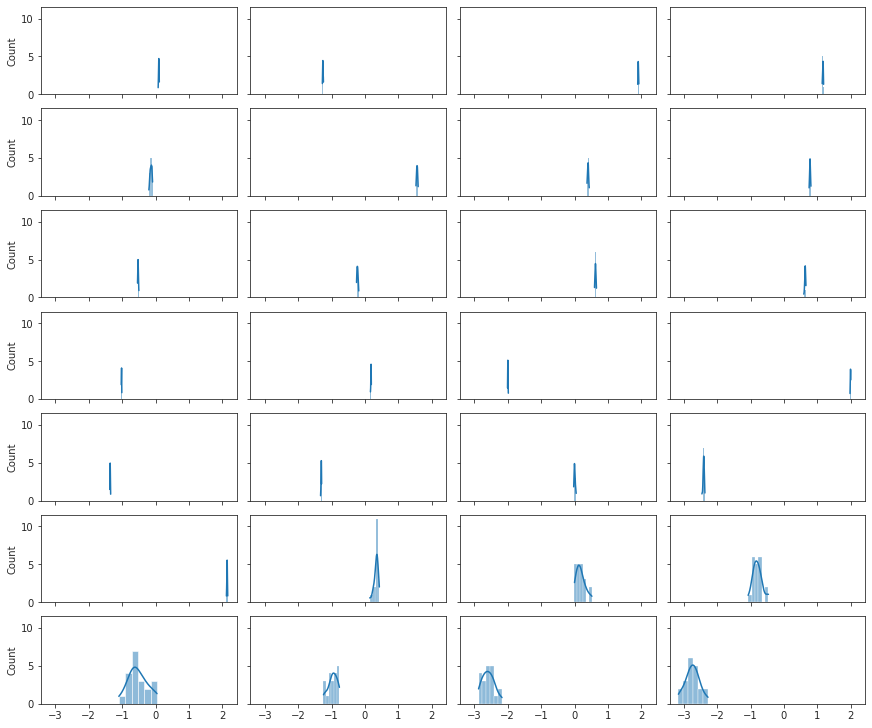
show_opticflow_full(val['x'][500]);

r = 1 - sp_dist.pdist(z_vld.mean(0).T, 'correlation')
r = sp_dist.squareform(r)
fig, ax = create_figure(1, 1, (15, 12))
sns.heatmap(
r,
vmin=-1,
vmax=1,
cmap='bwr',
linewidths=0.005,
linecolor='silver',
square=True,
annot=True,
fmt='.1f',
annot_kws={'fontsize': 8},
ax=ax,
);
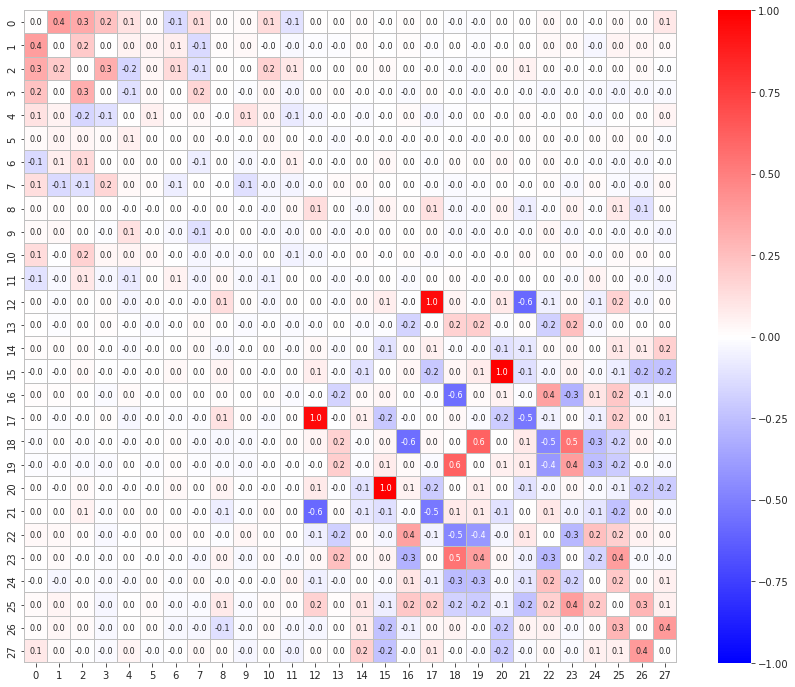
# create datasets
f = pjoin(tr.model.cfg.data_dir, tr.model.cfg.h_pre)
f = h5py.File(f, mode='r')
fix_vld = np.array(f['vld']['fix'], dtype=float)
pos_obj_vld = np.array(f['vld']['pos_obj'], dtype=float)
vel_obj_vld = np.array(f['vld']['vel_obj'], dtype=float)
vel_slf_vld = np.array(f['vld']['vel_slf'], dtype=float)
f.close()
pos_vld = dc(pos_obj_vld)
pos_vld[0] -= fix_vld[:, 0]
pos_vld[1] -= fix_vld[:, 1]
g_vld = np_nans((len(fix_vld), 11))
g_vld[:, :2] = fix_vld
g_vld[:, 2:5] = vel_slf_vld.T
g_vld[:, 5:8] = vel_obj_vld.T
g_vld[:, 8:11] = pos_vld.T
g_vld.shape
(7500, 11)
# create datasets
f = pjoin(tr.model.cfg.data_dir, tr.model.cfg.h_pre)
f = h5py.File(f, mode='r')
fix_tst = np.array(f['tst']['fix'], dtype=float)
pos_obj_tst = np.array(f['tst']['pos_obj'], dtype=float)
vel_obj_tst = np.array(f['tst']['vel_obj'], dtype=float)
vel_slf_tst = np.array(f['tst']['vel_slf'], dtype=float)
f.close()
pos_tst = dc(pos_obj_tst)
pos_tst[0] -= fix_tst[:, 0]
pos_tst[1] -= fix_tst[:, 1]
g_tst = np_nans((len(fix_tst), 11))
g_tst[:, :2] = fix_tst
g_tst[:, 2:5] = vel_slf_tst.T
g_tst[:, 5:8] = vel_obj_tst.T
g_tst[:, 8:11] = pos_tst.T
g_tst.shape
(2500, 11)
dim_names = {
0: 'fix_x',
1: 'fix_y',
2: 'v_self_x',
3: 'v_self_y',
4: 'v_self_z',
5: 'v_obj_x',
6: 'v_obj_y',
7: 'v_obj_z',
8: 'pos_obj_x',
9: 'pos_obj_y',
10: 'pos_obj_z',
}
corr = 1 - sp_dist.pdist(g_vld.T, metric='correlation')
corr = sp_dist.squareform(corr)
corr.shape
(11, 11)
fig, ax = create_figure(1, 1, (7, 5))
sns.heatmap(
corr,
center=0,
cmap='bwr',
vmin=-1,
vmax=1,
linewidths=0.005,
linecolor='silver',
square=True,
annot=True,
fmt='.1f',
annot_kws={'fontsize': 8},
ax=ax,
);
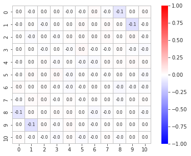
u_g, s_g, v_g = sp_lin.svd(g_vld, full_matrices=False, compute_uv=True)
s_g *= 100 / s_g.sum()
u_g.shape, s_g.shape, v_g.shape
((7500, 11), (11,), (11, 11))
u, s, v = sp_lin.svd(z_vld.mean(0), full_matrices=False, compute_uv=True)
s *= 100 / s.sum()
u.shape, s.shape, v.shape
((7500, 28), (28,), (28, 28))
ticks = [
i for i in range(tr.model.cfg.total_latents())
if i % tr.model.cfg.n_latent_per_group == 0
]
ticklabels = [i + 1 for i in ticks]
fig, ax = create_figure(figsize=(8, 3))
ax.plot(s, marker='o', label='latents')
ax.plot(s_g, marker='o', label='ground truth')
ax.set(xticks=ticks, xticklabels=ticklabels)
ax.legend()
ax.grid()
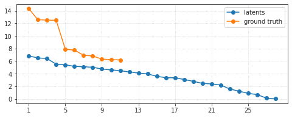
from sklearn import linear_model
lr = linear_model.LinearRegression().fit(z_vld.mean(0), g_vld)
pred = lr.predict(z_tst.mean(0))
r = 1 - sp_dist.cdist(pred.T, g_tst.T, metric='correlation')
pred.shape, r.shape
((2500, 11), (11, 11))
fig, ax = create_figure(figsize=(12, 10))
sns.heatmap(
r,
cmap='PiYG',
vmin=-1,
vmax=1,
square=True,
linewidth=0.01,
annot=True,
fmt='.1f',
annot_kws={'fontsize': 10},
ax=ax
)
_t = [f"{e} ({i:02d})" for i, e in dim_names.items()]
ax.set(xticklabels=_t, yticklabels=_t)
ax.tick_params(axis='x', rotation=-90)
ax.tick_params(axis='y', rotation=0)
plt.show()
plt.plot(lr.coef_[5])
[<matplotlib.lines.Line2D at 0x7f4c5c7079d0>]
lr = linear_model.LinearRegression().fit(g_vld, z_vld.mean(0))
pred = lr.predict(g_tst)
r = 1 - sp_dist.cdist(pred.T, z_tst.mean(0).T, metric='correlation')
pred.shape, r.shape
((2500, 28), (28, 28))
fig, ax = create_figure(figsize=(12, 10))
sns.heatmap(
r,
cmap='PiYG',
vmin=-1,
vmax=1,
square=True,
linewidth=0.01,
annot=True,
fmt='.1f',
annot_kws={'fontsize': 8},
ax=ax
)
plt.show()
from sklearn.feature_selection import mutual_info_regression
mi = np.zeros((11, tr.model.cfg.total_latents()))
for i in range(11):
mi[i] = mutual_info_regression(z_vld.mean(0), g_vld[:, i])
fig, axes = create_figure(3, 4, (12, 5), 'all', 'none', constrained_layout=True)
for i in range(11):
ax = axes.flat[i]
ax.plot(mi[i], marker='.')
ax.set_title(dim_names[i])
ax.grid()
trim_axs(axes, 11)
plt.show()
fig, ax = create_figure(figsize=(17, 7))
sns.heatmap(mi, vmin=0, linewidth=0.01, linecolor='dimgrey')
ax.set_yticklabels([f"{e} ({i:02d})" for i, e in dim_names.items()])
ax.tick_params(axis='y', rotation=0)
plt.show()
i, j = 6, 9
c_xy = np.histogram2d(g_vld[:, i], z_vld.mean(0)[:, j], 50)[0]
plt.imshow(c_xy);
i, j = 5, 10
c_xy = np.histogram2d(g_vld[:, i], z_vld.mean(0)[:, j], 50)[0]
plt.imshow(c_xy);
fix = g_vld[:, :2]
fix = np.concatenate([
fix,
np.ones((len(fix), 1)),
], axis=1)
fix.shape
(7500, 3)
ax = sns.histplot(x=fix[:, 0], y=fix[:, 1])
ax_square(ax);
heading = g_vld[:, 2:5]
sns.histplot(cart2polar(heading)[:, 0]);
fix.shape, heading.shape
((7500, 3), (7500, 3))
cos = 1 - sp_dist.cdist(fix, heading, metric='cosine')
theta = np.arccos(np.diag(cos))
theta.shape
(7500,)
mi_emerg = mutual_info_regression(z_vld.mean(0), theta)
mi_emerg.shape
(21,)
plt.plot(mi_emerg, marker='.')
[<matplotlib.lines.Line2D at 0x7fa25a8db8b0>]
sp_stats.pearsonr(z_vld.mean(0)[:, 6], theta)
(-0.6325539907609852, 0.0)
fig, ax = create_figure(figsize=(16, 4))
intvl = range(200)
ax.plot(sp_stats.zscore(z_vld.mean(0)[:, 6][intvl]))
ax.plot(-sp_stats.zscore(theta[intvl]))
[<matplotlib.lines.Line2D at 0x7fa20b05bd90>]
sp_stats.pearsonr(z_vld.mean(0)[:, 11], heading[:, 2])
(0.4883216330680817, 0.0)
sp_stats.pearsonr(theta, heading[:, 2])
(-0.7550395076607881, 0.0)